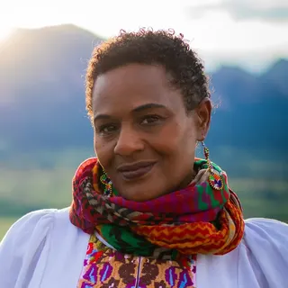

Running for Mayor of Boulder · 2026
Taishya Adams
Adams is a sitting Boulder councilmember seeking the mayor’s office.
Money (city clerk, as of 2026-08-10): raised $0 · spent $34.99 · matching funds received $0.
About this candidate
Adams is a sitting Boulder councilmember seeking the mayor’s office. She emphasizes climate resilience, affordability and a stronger policy role for council.
- Occupation: Nonprofit founder
- Public office: Boulder city councilmember, elected 2023
- In Boulder: moved to Boulder in summer 2013
Bio sources: boulderreportinglab.org
In their own words
Short passages from questionnaires, interviews and the campaign website, by topic. If a topic is missing, we have no quote on it. That says nothing about their view.
Climate
my number one is ecological collapse
Source: KGNU · interview · 2026-07-29 · Mayor Brockett & Councilmember Adams on the biggest challenges facing Boulder
Downtown
I come from a business family.
Source: Better Boulder · questionnaire · Where do Boulder’s 2026 Mayorial Candidates Stand?
The City of Boulder is in the midst of an polycrisis where climate chaos, geopolitical strife, and economic downturn will require new strategy and investment tools.
Source: Downtown Boulder Partnership · questionnaire · 2026-09-21 · 2026 Mayoral and City Council Candidate Questions — Taishya Adams
Governance
City of Boulder governmental priorities include addressing deferred maintenance of essential buildings, addressing budget constraints, and wildlife mitigation.
Source: Better Boulder · questionnaire · Where do Boulder’s 2026 Mayorial Candidates Stand?
As Mayor, I would host monthly business town hall and meetings in collaboration with the Boulder Chamber, Latino Chamber of Boulder, Downtown Partnerships, and Visit Boulder.
Source: Downtown Boulder Partnership · questionnaire · 2026-09-21 · 2026 Mayoral and City Council Candidate Questions — Taishya Adams
Develop pathways for participatory budgeting and resource allocation
Source: Campaign website: Taishya Adams · campaign website · Adams for Boulder — campaign site
Housing
Yes, I voted to pass the Family-friendly Vibrant Neighborhoods act to make it easier to build duplexes and triplexes.
Source: Better Boulder · questionnaire · Where do Boulder’s 2026 Mayorial Candidates Stand?
Public safety
As Mayor, I continue to be committed to public safety for all including businesses.
Source: Downtown Boulder Partnership · questionnaire · 2026-09-21 · 2026 Mayoral and City Council Candidate Questions — Taishya Adams
Transportation
I am committed to prioritizing what needs to be completed for the Core Arterial Network and crosswalking with need and funding available to complete it.
Source: Better Boulder · questionnaire · Where do Boulder’s 2026 Mayorial Candidates Stand?
What reporters wrote
These are the reporter's words about the candidate, not the candidate's own.
Adams said she thinks in general that bonding is one way to address the city’s capital needs, but is not in favor of the $400 million bond that will be on the 2026 ballot.
Richard Valenty · 2026-09-18 · Candidate interview: Taishya Adams
Taishya Adams has served nearly three years on Boulder City Council and is running for mayor on a platform focused on climate resilience, affordability and giving the council a stronger role in city…
Taishya Adams has served nearly three years on Boulder City Council and is running for mayor on a platform focused on climate resilience, affordability and giving the council a stronger role in city governance. Her council term ends this year, and because she cannot run simultaneously for mayor and reelection to her council seat, she will leave her current seat regardless of the mayoral election’s outcome.
Boulder Reporting Lab · 2026-08-28 · Profile source: Taishya Adams
Endorsements
Each line says where the endorsement comes from.
What the labels on each endorsement mean
- Endorser's own statement
- The organization or person announced it themselves (their site, their press release, or a news story reprinting that release).
- “X campaign lists Y”
- Only the candidate's (or ballot campaign's) own website says so. We didn't find the endorser saying it. It may be true, but it is the campaign's claim.
- City filing
- A committee's registration with the city clerk names the candidate or measure it supports.
- News listing
- A news outlet lists the endorsement, but we did not find the endorser's own statement.
Titles (e.g. “U.S. Representative”) are as printed on the cited page and describe the person, not an endorsement by their office. A blank title means the source did not give one.
Organizations and committees (3)
- Boulder Area Labor Council, AFL-CIO 1st choice (ranked-choice)Endorser's own statement. Boulder Area Labor Council announces endorsements for City of Boulder, RTD District O and local ballot measures (media release, Yellow Scene) · 2026-09-19
- Boulder County Democratic Socialists of America 1st choice (ranked-choice)Endorser's own statement. @boulderdsa on Instagram: DSA endorses Taishya Adams and Jamillah Richmond · 2026-09-09
- PLAN-Boulder County 2nd choice (ranked-choice)Endorser's own statement. 2026 Candidate Endorsements (PLAN-Boulder County) · 2026-09-28
At the forums, in their own words
Short passages from 2026 candidate forums, by topic, with the question and a link to that moment in the recording. Quoted from an automatic transcript. Check the recording. If a topic is missing, we have no quote on it. Compare answers to the same question.
Housing
League of Women Voters forum · September 26, 2026
(EFA) What specific policies, development strategies, funding approaches, or partnerships would you pursue to increase or preserve housing affordable to families at approximately 30 to 40 percent AMI?
The first is the need to expand permanently affordable housing and make sure that it's inclusive of child care on site.
Quoted from an automatic transcript. Check the recording. Watch at 2:26:58 · September 26, 2026 League of Women Voters of Boulder County Candidate Forum (City of Boulder, YouTube)
League of Women Voters forum · September 26, 2026
(EFA) What specific policies, development strategies, funding approaches, or partnerships would you pursue to increase or preserve housing affordable to families at approximately 30 to 40 percent AMI?
restore our elevate Boulder program which was our universal basic income program.
Quoted from an automatic transcript. Check the recording. Watch at 2:27:16 · September 26, 2026 League of Women Voters of Boulder County Candidate Forum (City of Boulder, YouTube)
League of Women Voters forum · September 26, 2026
What types of housing would you prioritize? How are you as mayor going to promote housing for middle-income families?
I am a strong advocate for diversifying the housing portfolio and types within the existing footprint of Area 1.
Quoted from an automatic transcript. Check the recording. Watch at 2:43:02 · September 26, 2026 League of Women Voters of Boulder County Candidate Forum (City of Boulder, YouTube)
League of Women Voters forum · September 26, 2026
Ballot issue 2J, the residential vacancy excise tax (~$4,000 on residential property vacant more than half the year). Do you support this tax and will it generate enough income to pay for administering it?
Yes on 2J (the vacancy tax), in their words below.
I am a supporter of a residential vacancy tax.
Quoted from an automatic transcript. Check the recording. Watch at 2:48:29 · September 26, 2026 League of Women Voters of Boulder County Candidate Forum (City of Boulder, YouTube)
Budget, debt and the 2K bond
PLAN / Open Boulder / Better Boulder forum · September 2, 2026
Opening introduction (two minutes)
Having plans with measures and metrics and budget impacts to them
Quoted from an automatic transcript. Check the recording. Watch at 10:47 · City of Boulder Colorado Candidate-Forum - 090226 (greenlight studios, YouTube)
PLAN / Open Boulder / Better Boulder forum · September 2, 2026
A citizen group has developed a proposal for the city to hire a performance auditor, different from a financial auditor, and to fund a small department to support that auditor; this auditor would report to city council, with an audit committee in the 2027 budget. Do you support this or think it is necessary?
I would also recommend a director of research and evaluation,
Quoted from an automatic transcript. Check the recording. Watch at 1:05:19 · City of Boulder Colorado Candidate-Forum - 090226 (greenlight studios, YouTube)
Arts and culture forum · September 15, 2026
Final one-minute statement
We need to invest in our values, and our budget doesn't currently reflect that.
Speaker identified from speaking order; the moderator did not name them.
Transcript note: Last drawn name; speaker says 'as mayor'.
Quoted from an automatic transcript. Check the recording. Watch at 2:00 · (Pt 4/5) 2026 City Council Candidates Forum on Arts and Culture (Boulder County Arts Alliance, YouTube)
League of Women Voters forum · September 26, 2026
Ballot measure 2K: Boulder voters will consider authorizing up to $400 million in new debt through additional property taxes for recreation, public safety and other city facilities. Do you support this measure? Why or why not?
No yes/no label: Says she was initially a yes; her current position is not stated in this quote.
Initially, I was a yes to this $400 million bond
Quoted from an automatic transcript. Check the recording. Watch at 2:31:48 · September 26, 2026 League of Women Voters of Boulder County Candidate Forum (City of Boulder, YouTube)
League of Women Voters forum · September 26, 2026
Ballot measure 2K: Boulder voters will consider authorizing up to $400 million in new debt through additional property taxes for recreation, public safety and other city facilities. Do you support this measure? Why or why not?
I realized that there's really a lack of community support and the need to do more trust building and collective buy-in.
Quoted from an automatic transcript. Check the recording. Watch at 2:32:12 · September 26, 2026 League of Women Voters of Boulder County Candidate Forum (City of Boulder, YouTube)
Transportation
League of Women Voters forum · September 26, 2026
What are your feelings about the bus-only lanes and the core arterial network (CAN)? Should Boulder continue prioritizing protected bike lanes?
Yes on the Core Arterial Network / bus-only lanes, in their words below.
And so I'm a yes to continuing to do the incredible work on the core arterial network and the protected bike lanes.
Quoted from an automatic transcript. Check the recording. Watch at 2:37:21 · September 26, 2026 League of Women Voters of Boulder County Candidate Forum (City of Boulder, YouTube)
Growth and development
League of Women Voters forum · September 26, 2026
What types of housing would you prioritize? How are you as mayor going to promote housing for middle-income families?
And I'm against moving into Area 3, which is north of Boulder.
Quoted from an automatic transcript. Check the recording. Watch at 2:43:24 · September 26, 2026 League of Women Voters of Boulder County Candidate Forum (City of Boulder, YouTube)
League of Women Voters forum · September 26, 2026
Tell us about one city issue on which you changed your position after considering new evidence or another perspective. What changed your mind?
But also in land back and I think when we think about area three, we should consider land back.
Quoted from an automatic transcript. Check the recording. Watch at 3:03:08 · September 26, 2026 League of Women Voters of Boulder County Candidate Forum (City of Boulder, YouTube)
Climate and wildfire
Boulder Chamber forum · August 26, 2026
If elected, name your top three priorities. And do you believe the city is moving in the right direction or wrong direction on those top priorities?
I would also put climate justice and climate resilience at the top of my list. We have had the warmest and the driest of the seasons that we've ever had before.
Quoted from an automatic transcript. Check the recording. Watch at 9:22 · 2026 | Boulder City Council Candidate Forum (Boulder Chamber, YouTube)
PLAN / Open Boulder / Better Boulder forum · September 2, 2026
Opening introduction (two minutes)
Clean air, clean water, food that is close, that is clean, that is of high quality.
Quoted from an automatic transcript. Check the recording. Watch at 10:02 · City of Boulder Colorado Candidate-Forum - 090226 (greenlight studios, YouTube)
Arts and culture forum · September 15, 2026
If elected mayor, how would you use your leadership role to help ensure that adopted plans are translated into action and that major projects are delivered responsibly and within budget?
We are going to have more extreme heat. We are going to have more wildfires. And arts plays a critical role in not only communication and education, but climate grief.
Quoted from an automatic transcript. Check the recording. Watch at 8:27 · (Pt 3/5) 2026 City Council Candidates Forum on Arts and Culture (Boulder County Arts Alliance, YouTube)
League of Women Voters forum · September 26, 2026
If elected, what is the single most important new initiative you would pursue during your first year as mayor? (30 seconds)
I'd say the newest initiative would be updating our 2017 agricultural plan.
Quoted from an automatic transcript. Check the recording. Watch at 2:53:21 · September 26, 2026 League of Women Voters of Boulder County Candidate Forum (City of Boulder, YouTube)
Arts and culture
Arts and culture forum · September 15, 2026
What measures would you support to ensure future CCRS non-profit capital investments are transparent, guided by clear public priorities and evaluation criteria, and directed toward significant projects that create visible, lasting community value?
we need to have some hard conversations about how are we going to deal with the urgent and important, but also recognizing the long-term necessity to invest in the arts.
Quoted from an automatic transcript. Check the recording. Watch at 24:21 · (Pt 1/5) 2026 City Council Candidates Forum on Arts and Culture (Boulder County Arts Alliance, YouTube)
Homelessness and public safety
Boulder Chamber forum · August 26, 2026
If elected, name your top three priorities. And do you believe the city is moving in the right direction or wrong direction on those top priorities?
And lastly, public safety for all. ICE is here. We have increased discrimination issues across our community and it's time to make sure that the council is leading on public oversight.
Quoted from an automatic transcript. Check the recording. Watch at 9:37 · 2026 | Boulder City Council Candidate Forum (Boulder Chamber, YouTube)
Other topics
Boulder Chamber forum · August 26, 2026
The mayor has a unique role in building consensus and setting council priorities. How would you use that leadership role to bring council, city staff, and the business community together around a clear economic strategy and hold the city accountable for measurable progress?
we need to better engage our borders and our commissions in the work that we're doing, as well as in addition to our businesses and recognizing that all of our businesses are not the same.
Transcript note: 'borders' = boards (Whisper).
Quoted from an automatic transcript. Check the recording. Watch at 28:10 · 2026 | Boulder City Council Candidate Forum (Boulder Chamber, YouTube)
Boulder Chamber forum · August 26, 2026
If elected, what specific actions would you take to support downtown businesses, encourage investment, and make economic vitality a priority?
We have 16,000 acres of agricultural land in our city. Why aren't we creating stronger partnerships so that we can reduce those food costs
Speaker identified from speaking order; the moderator did not name them.
Transcript note: Third of the called respondents (garbled 'Venetatia').
Quoted from an automatic transcript. Check the recording. Watch at 1:41:13 · 2026 | Boulder City Council Candidate Forum (Boulder Chamber, YouTube)
Boulder Chamber forum · August 26, 2026
Choose another mayoral candidate. Identify one strength or policy idea that person would bring to city leadership and explain how you look forward to working together.
I think that the council needs to take a stronger role in setting direction and holding ourselves accountable to the goals and the activities and the budgets that we set.
Quoted from an automatic transcript. Check the recording. Watch at 1:50:47 · 2026 | Boulder City Council Candidate Forum (Boulder Chamber, YouTube)
PLAN / Open Boulder / Better Boulder forum · September 2, 2026
Given the strong city manager / weak mayor structure of our city's government, how would you approach your role as mayor to set the council's overall objectives?
I would recommend that we move to a quarterly and have specific milestones and reporting
Quoted from an automatic transcript. Check the recording. Watch at 1:23:34 · City of Boulder Colorado Candidate-Forum - 090226 (greenlight studios, YouTube)
League of Women Voters forum · September 26, 2026
Mayoral opening statement (one minute)
I bring an insider-outsider perspective as someone who's been able to serve on city council
Quoted from an automatic transcript. Check the recording. Watch at 2:08:51 · September 26, 2026 League of Women Voters of Boulder County Candidate Forum (City of Boulder, YouTube)
League of Women Voters forum · September 26, 2026
Mayoral opening statement (one minute)
The most important is making sure that our city's staff and our city's council get in right relationship with each other.
Quoted from an automatic transcript. Check the recording. Watch at 2:09:35 · September 26, 2026 League of Women Voters of Boulder County Candidate Forum (City of Boulder, YouTube)
League of Women Voters forum · September 26, 2026
What are the unique roles of the Boulder mayor that make the job different from being a city council member?
being able to be at the table every week to determine what our city's agenda is going to be
Quoted from an automatic transcript. Check the recording. Watch at 2:14:27 · September 26, 2026 League of Women Voters of Boulder County Candidate Forum (City of Boulder, YouTube)
League of Women Voters forum · September 26, 2026
Tell us about one city issue on which you changed your position after considering new evidence or another perspective. What changed your mind?
I do believe that there is a need for stronger council driven direction and participation.
Quoted from an automatic transcript. Check the recording. Watch at 3:02:48 · September 26, 2026 League of Women Voters of Boulder County Candidate Forum (City of Boulder, YouTube)
Questionnaire answers by year
Newest first. A yes or no answers only the question on that card, not the whole topic.
2023
What do you think are the most promising initiatives for reducing homelessness?
Homelessness is a response to failed policy, not failed people. I believe the most promising initiatives in reducing homelessness are those that are…
Homelessness is a response to failed policy, not failed people. I believe the most promising initiatives in reducing homelessness are those that are sufficiently funded, staffed and supported over multiple years. Our affected community members and community support organizations have been clear on the need for sustained support of existing evidence-based approaches (e.g. day community center) while expanding mental health, detox, recovery, transitional living, etc. This is not charity. These extreme inequities are a result of a system that encourages myopic economic growth on the backs of discriminatory policies.
Source: 2023 Boulder City Council election: Where the candidates stand on homelessness solutions
What approach would you take to address camping in our parks, on our bike paths and along our waterways?
I advocate for investments in evidence-based, knowledge-aligned proactive approaches like basic income support, increasing the minimum wage to a…
I advocate for investments in evidence-based, knowledge-aligned proactive approaches like basic income support, increasing the minimum wage to a living wage to stop new people from becoming unhoused, and expand affordable housing programs to include transitional and sober living options. I bring an ecosystem approach to policymaking that addresses more than the tip of the iceberg.
Source: 2023 Boulder City Council election: Where the candidates stand on homeless encampments
What is your plan for increasing Boulder’s affordable housing supply?
We need to better define what “affordable” means across the socioeconomic spectrum in our city. Building on the recent success of the rise in…
We need to better define what “affordable” means across the socioeconomic spectrum in our city. Building on the recent success of the rise in occupancy limit, we must invest in climate resilient neighborhoods with multi-unit duplex, triplexes, commercial, transportation and community/communal spaces. Houses are a part of a neighborhood, which also must include access to food, jobs, childcare, schools, etc.
Source: 2023 Boulder City Council election: Where the candidates stand on affordable housing
We are in a climate emergency. With your leadership, how would Boulder change commensurately?
We must access and leverage every single penny of the historic climate investments at the federal, state and city government to expand our city’s…
We must access and leverage every single penny of the historic climate investments at the federal, state and city government to expand our city’s climate staff, budget, partnerships and resources. We must ensure climate impacts from the built environment are adequately assessed, measured, aligned to city goals, reported and used to inform every decision in our city. Without habitat for all living beings in our ecosystem, humans cannot survive.
Source: 2023 Boulder City Council election: Where the candidates stand on climate change action
How can we better provide alternatives to cars when existing infrastructure prioritizes cars?
We need alternatives that meet real people and families where they are. A $500 rebate on a $1,200 bike will not meet the needs of our…
We need alternatives that meet real people and families where they are. A $500 rebate on a $1,200 bike will not meet the needs of our multi-generational/large families, families with children at different schools and multiple jobs, or people with disabilities. We need to significantly invest in expanded bus lines and service hours, car share programs, as well as related issues like a living wage which allows for many more to access rebates and other incentive programs. It is worth noting that rebates are funded by the very taxpayers who cannot afford to access the rebate.
Assume you are elected this November. What one specific thing will you have accomplished that you’re proud of after one year?
Success after year one on council will be improved processes and community activation. We will be closer to the collaboration rating on the Boulder…
Success after year one on council will be improved processes and community activation. We will be closer to the collaboration rating on the Boulder Engagement Framework while also reducing bottlenecks and blindspots in our city’s policies, procedures, programs and initiatives. It is critical that we move beyond informing and consulting towards collective policymaking that shares the power, knowledge, wisdom, and courage to heal across communities and co-creating policies and investments that makes seven Boulder generations from now possible.
Source: 2023 Boulder City Council election: Where the candidates stand on their one-year visions
Would you support rent stabilization?
Yes. Boulder Beat asked for a yes or no by email. The candidate did not explain it.
Source: Boulder Beat 2023 candidate questionnaire (emailed yes/no)
Do you support Boulder’s recent expansion of occupancy limits (3 to 5 unrelated adults)?
Yes. Boulder Beat asked for a yes or no by email. The candidate did not explain it.
Source: Boulder Beat 2023 candidate questionnaire (emailed yes/no)
Would you continue the city’s current encampment removal strategy?
No. Boulder Beat asked for a yes or no by email. The candidate did not explain it.
Source: Boulder Beat 2023 candidate questionnaire (emailed yes/no)
Should the Police Oversight Panel have more authority over discipline when officers are found guilty of misconduct?
Yes. Boulder Beat asked for a yes or no by email. The candidate did not explain it.
Source: Boulder Beat 2023 candidate questionnaire (emailed yes/no)
Do you support the sales-tax extension and arts-funding ballot measure (2023 2A)?
No. Boulder Beat asked for a yes or no by email. The candidate did not explain it.
Source: Boulder Beat 2023 candidate questionnaire (emailed yes/no)
Do you support the Safe Zones 4 Kids ballot measure?
No. Boulder Beat asked for a yes or no by email. The candidate did not explain it.
Source: Boulder Beat 2023 candidate questionnaire (emailed yes/no)
Money
- $0Raised
- $34.99Spent
- $0Matching funds received
- $-34.99Cash on hand
2026 · Together with Taishya Adams, as of 2026-08-10.
0 contribution lines, 2 expenditures. City clerk, not TRACER. Clerk statements · Everyone.
Spent on: all 2 expenditure lines
| Payee | Purpose | Date | Amount |
|---|---|---|---|
| Squarespace | Website Hosting | 2026-07-16 | $25 |
| Apple | iCloud Storage | 2026-08-08 | $9.99 |
Campaigns
| Year | Office | Outcome |
|---|---|---|
| 2026 | Mayor of Boulder · campaign | on the ballot |
| 2023 | Boulder City Council | 14,633 votes · elected |
Forum attendance
- 2026-09-26 League of Women Voters of Boulder County City Council and Mayoral Candidate Forums — attended · recording
- 2026-09-15 2026 City Council Candidates Forum on Arts and Culture — attended · recording
- 2026-09-02 Collaborative City Council and Mayoral Candidate Forum (PLAN-Boulder County / Open Boulder / Better Boulder) — attended · recording
- 2026-08-26 Boulder Chamber City Council and Mayoral Candidate Forum — attended · recording
- 2026-06-06 Boulder Progressives Raucous Caucus — did not attend
- 2023-08-29 Boulder Chamber City Council and Mayoral Candidate Forum — attended · recording
- 2023-08-23 PLAN-Boulder County candidate forum (mayor + two council) — attended